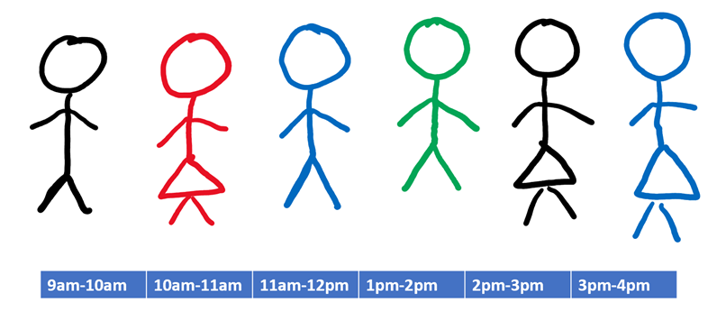
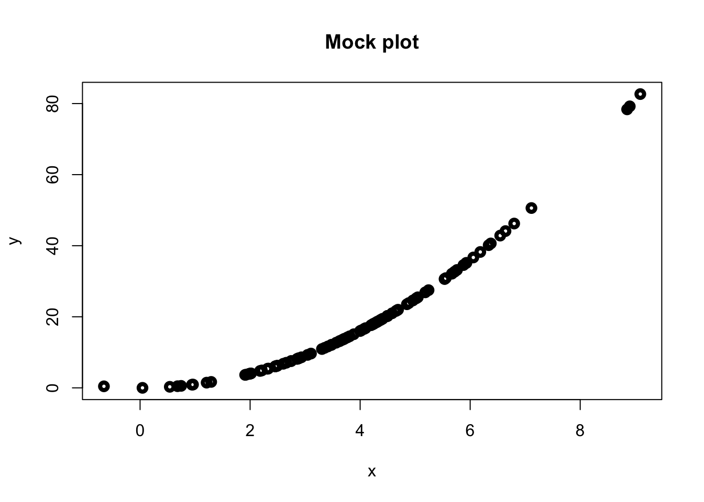
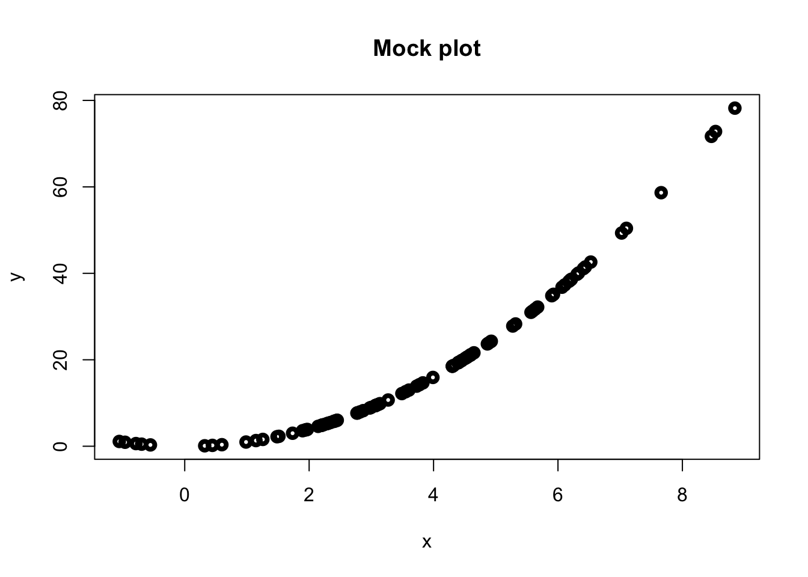

# Heading 1
## Heading 2
### Heading 3
#### Heading 4
##### Heading 5
###### Heading 62 Some R Bookdown Features
In this section, we describe the basic use of R Bookdown and introduce some of the more advanced features/customisation. What we present here is representative but not exhaustive. R Bookdown is very well documented by its creator (Yihui Xie) and others.
See bookdown.org for lots of useful resources, including the comprehensive Bookdown Documentation.
For advanced use of R Bookdown, the rstudio4edu guidance is great.
We have a dedicated HTML/Accessibility channel on the School’s Digital Learning Resources Team, where you can ask and discuss questions.
2.1 Bookdown File Structure
There are a number of files that make up the R Bookdown structure, but you’ll be glad to know that you can ignore most of them. The ones you will spend most of your time editing are the ones with the .Rmd extension.
index.Rmdis recognised by R Bookdown as the first chapter of your book. You can define thetitleandauthorof your book in lines 2 and 3 of this file respectively. You should not need to edit the remaining information in lines 4-15. Start writing the first section of your book after the---in line 16.The remaining
.Rmdfiles contain the subsequent sections of your book. RMarkdown will read the files in alphabetical order, so a sensible naming convention for your files is01-<section-name>.Rmd,02-<section-name>.Rmd, etc. Note that each file can contain multiple sections.
If you prefer, you can write your entire book in index.Rmd, but this is not recommended as your file could get very big!
output.ymlprovides R Bookdown with some information on how to compile your document. The only part of this you need to edit is line 13, where you can replace Lisa’s name with your own and update the link to your homepage.bookdown.ymlprovides R Bookdown with some more information on your document details. The only lines of interest are:- Line 1: Update this to change the output filename of your book;
- Line 4: Update this to change the prefix of each
# Heading. For this template, we have set this to"Part "(note the space at the end). If you would rather not have a prefix at all, comment out this line by inserting a#at the start of line 4.
2.2 Markdown Basics
If you’re completely new to R Markdown, the Markdown Basics guide provides an excellent overview of the most common syntax. Most of it is very straightforward and intuitive, but will take some getting used to if you are accustomed to LaTeX.
2.2.1 Examples
Emphasis
Emphasise parts of text using **bold** or __bold__.
You can use *italic* or _italic_ for italic text, but it is best to avoid this when creating accessible documents.
Headings
Use the syntax
for headings, subheadings, etc. R Bookdown will automatically number your headings. To suppress the heading number, add {-} at the end of your heading, e.g. ## Unnumbered Subheading {-}.
Links and References
Add a link to a url using the syntax [link text](link url).
[School of Mathematical Sciences](https://www.nottingham.ac.uk/mathematics/?target=_blank)School of Mathematical Sciences
Adding ?target=_blank to the end of the URL forces the link to open in a new tab when clicked.
Link to other parts of your book using heading names.
Find out how to [Upload your book to Moodle][Upload Your Book to Moodle].Find out how to [Upload your book to Moodle][Upload Your Book to Moodle].
We recommend suppressing numbers from Heading 4 onwards.
Lists
Create unordered lists using the syntax
* Item 1
* Item 2
+ Item 2a
+ Item 2aWhich produces the output:
- Item 1
- Item 2
- Item 2a
- Item 2a
Similarly, an ordered list can be created using the syntax
1. Item 1
2. Item 2
a. Item 2a
b. Item 2b- Item 1
- Item 2
- Item 2a
- Item 2b
2.3 Mathematics
Mathematics can be entered using familiar LaTeX commands and delimiters.
Inline Mathematics
Inline mathematics is delimited using either $...$ or \(...\).
The syntax
Consider the equation $y = mx+c$.yields: Consider the equation \(y = mx+c\).
Display Mathematics
Display mathematics (unnumbered) is delimited using either $$...$$, \[...\] or \begin{equation*}...\end{equation*}.
$$
\int_0^\infty e^{-x^2}\,\mathrm{d}x = \frac{\sqrt{\pi}}{2}.
$$yields:
\[ \int_0^\infty e^{-x^2}\,\mathrm{d}x = \frac{\sqrt{\pi}}{2}. \]
Numbered Equation
Enter a numbered equation in the usual way using \begin{equation}...\end{equation}. Whilst the equation environment follows conventional LaTeX syntax, R Bookdown does not support \label, \eqref to tag and reference equations. See the example below for how to tag and reference an equation in R Bookdown.
$$
f\left(k\right) = \binom{n}{k} p^k\left(1-p\right)^{n-k}
$$ {#eq-binom}
Consider the Binomial Theorem @eq-binom.\[ f\left(k\right) = \binom{n}{k} p^k\left(1-p\right)^{n-k} \tag{2.1}\]
Consider the Binomial Theorem Equation 2.1.
Do not use underscores (“_“) in your labels for cross referencing equations, or any other parts (e.g. tables, theorems, etc. which are discussed in later sections). If you have a label with multiple words, either just write them all in lower case, or use camel case, e.g. #PythThm instead of #pyth_thm.
Underscores are special characters in Markdown that are used to delimit italic text (see Markdown Basics), so using this character in labels causes a conflict.
User-Defined Commands
You may be the sort of person who likes writing your own LaTeX commands to save some typing. You can add custom commands anywhere in a .Rmd file and they will work in the expected way, as long as you define the command before its first use in your book.
The best place to define your custom commands is in index.md just below Line 16.
Defining the following custom commands in index.md
\newcommand{\rd}{\mathrm{d}}
\newcommand{\deriv}[2]{\frac{\rd #1}{\rd #2}}
\newcommand{\nthderiv}[3]{\frac{\rd^#3 #1}{\rd #2}}then writing
Consider the differential equation
$$
\nthderiv{y}{x}{2}+3\deriv{y}{x}-y=0.
$$yields:
Consider the differential equation \[ \frac{\mathrm{d}^2 y}{\mathrm{d}x}+3\frac{\mathrm{d}y}{\mathrm{d}x}-y=0. \]
Multiple and Multiline Equations
R Bookdown interprets the align environment in the usual way. You can tag each line individually to refer back to specific equations. Replace the tag with \notag to suppress the numbering of a line.
Unfortunately, R Bookdown does not support the subequations environment (e.g. for labelling equations 2.2a, 2.2b etc.)
\begin{align}
g(X_{n}) &= g(\theta)+g'({\tilde{\theta}})(X_{n}-\theta) (\#eq:align1) \\
\sqrt{n}[g(X_{n})-g(\theta)] &= g'\left({\tilde{\theta}}\right)
\sqrt{n}[X_{n}-\theta ]
(\#eq:align2)
\end{align}
Consider the equations \@ref(eq:align1) and \@ref(eq:align2).\[\begin{align} g(X_{n}) &= g(\theta)+g'({\tilde{\theta}})(X_{n}-\theta) (\#eq:align1) \\ \sqrt{n}[g(X_{n})-g(\theta)] &= g'\left({\tilde{\theta}}\right) \sqrt{n}[X_{n}-\theta ] (\#eq:align2) \end{align}\]
Consider equations @ref(eq:align1) and @ref(eq:align2).
There is a (possibly unavoidable) bug with the cross-referencing of multiple equations in the align environment. Whilst adding a label to each equation successfully adds a number to the equation where it is displayed, the hyperlink does not work for the first equation. In general, only the hyperlink to the final equation will work. In the situation where you have multiple equations and it is important to be able to individually reference each one, we recommend writing each equation in its own equation environment using the method in Example @ref(exm:EqRef).
You can use the split environment inside equation so that all lines in a multiline equation share the same number.
\begin{equation}
\begin{split}
\mathrm{Var}(\hat{\beta}) & =\mathrm{Var}((X'X)^{-1}X'y)\\
& =(X'X)^{-1}X'\mathrm{Var}(y)((X'X)^{-1}X')'\\
& =(X'X)^{-1}X'\mathrm{Var}(y)X(X'X)^{-1}\\
& =(X'X)^{-1}X'\sigma^{2}IX(X'X)^{-1}\\
& =(X'X)^{-1}\sigma^{2}
\end{split}
(\#eq:var-beta)
\end{equation}
See \@ref(eq:var-beta) for the calculation of \(\mathrm{Var}(\hat{\beta})\).\[\begin{equation} \begin{split} \mathrm{Var}(\hat{\beta}) & =\mathrm{Var}((X'X)^{-1}X'y)\\ & =(X'X)^{-1}X'\mathrm{Var}(y)((X'X)^{-1}X')'\\ & =(X'X)^{-1}X'\mathrm{Var}(y)X(X'X)^{-1}\\ & =(X'X)^{-1}X'\sigma^{2}IX(X'X)^{-1}\\ & =(X'X)^{-1}\sigma^{2} \end{split} (\#eq:var-beta) \end{equation}\]
See @ref(eq:var-beta) for the calculation of \(\mathrm{Var}(\hat{\beta})\).
2.4 Tables
Here is a basic table.
|Header 1| Header 2 | Header 3|
|:------|:-------|:---------|
|Row 1 | Number | Number|
|Row 2 | Number | Number|| Header 1 | Header 2 | Header 3 |
|---|---|---|
| Row 1 | Number | Number |
| Row 2 | Number | Number |
Only very simple tables can be created using Markdown syntax (by design). This is generally a good thing for accessibility, but if you want to create more intricate tables, you can do so using raw HTML inside a .Rmd file (HTML is interpreted by R Bookdown just as readily as Markdown).
If you get fed up dealing with plain text to make your table, there are many good Markdown/HTML table generators online. I use this one, but others are available.
2.5 Images
We look at two approaches for adding the same image. We add alternative text (usually referred to as “alt text”) in both cases. You will see how R Markdown treats them differently.
The files must either be in the same directory as your .Rmd file(s), or you need to specify the path to the subfolder containing your image file.
Approach 1 (Markdown)
This is the easier approach but the alt text is not as nice (we have cheated and written it as a caption).

Approach 2 (R)
This is a slightly more difficult approach and requires the use of R, but it is better for “hiding” the alternative text.
```{r, echo=FALSE, out.width="600px", fig.alt="Here is the alt text",
fig.cap="Here is the image caption."}
knitr::include_graphics("workers.png")
```The student could view the alt text by right clicking on the image and selecting “Inspect Element”, or by using suitable assistive technology.
This is the preferred approach since we can distinguish between image captions and alt text. Also, we benefit from R’s automatic numbering of figures in their captions.
2.5.1 Generating Images Using R (or Python)
Press Ctrl+Alt+I to add R code. This adds the chunk below and you can add in R code. Python (or other languages) can also be added by pressing the ‘+C’ image at the top right corner.
x<-rnorm(100,mean=4,sd=2)
y<-x^{2}
plot(x,y,lwd=4,main="Mock plot")
You can also hide code, so that graphs are produced without showing the code, or you can hide output so the code is shown without the results etc. see the R Markdown cheatsheet for more information.
The graph is produced but the code is hidden, by setting echo=FALSE.

Here, the code is shown but the graph is not shown using eval=FALSE.
x<-rnorm(100,mean=4,sd=2)
y<-x^{2}
plot(x,y,lwd=4,main="Mock plot")2.6 Environments
R Bookdown has several built-in environments, such as Theorem, Example, etc to help organise your notes.
2.6.1 Numbered Environments
The following environments have an automatic numbering system and so can be cross-referenced.
| Environment | Printed Name | Label Prefix |
|---|---|---|
| theorem | Theorem | thm |
| lemma | Lemma | lem |
| corollary | Corollary | cor |
| proposition | Proposition | prp |
| conjecture | Conjecture | cnj |
| definition | Definition | def |
| example | Example | exm |
| exercise | Exercise | exr |
| hypothesis | Hypothesis | hyp |
This green box is the example environment. To invoke the example environment, use the syntax
::: {.example name="Example Name"}
<br>
Example text...
:::If you do not wish to name your example, then write
:::example
<br>
Example text...
:::The <br> tag is used to start the example text on a new line.
Cross Referencing Environments
Numbered environments are cross referenced in a similar way to equations (see Section 2.3).
::: {.theorem #thm-pyth name="Pythagoras' Theorem"}
<br>
For a right-angled triangle, if $c$ denotes the length of the hypotenuse
and $a$ and $b$ denote the lengths of the other two sides, we have
$$a^2 + b^2 = c^2.$$
:::
We use Pythagoras' Theorem @thm-pyth to find the length of the missing side.Theorem 2.1 (Pythagoras’ Theorem)
For a right-angled triangle, if \(c\) denotes the length of the hypotenuse and \(a\) and \(b\) denote the lengths of the other two sides, we have \[a^2 + b^2 = c^2.\]
We use Pythagoras’ Theorem Theorem 2.1 to find the length of the missing side.
The syntax for referencing environments is @ref(<prefix>-<label>). Refer to Table @ref(tab:num-envs) for the prefix corresponding to each environment type.
The prefix for a table reference is tab.
2.6.2 Unnumbered Environments
| Environment | Printed Name |
|---|---|
| proof | Proof |
| remark | Remark |
| note | Note |
| tip | Tip |
| activity | Activity |
| discussion | Discussion |
| solution | Solution |
We have written a custom template for use in The School of Mathematical Sciences with a specific colour scheme and some additional environments. The code for the School Template is in style.css.
If you want to make adjustments to the colour scheme, or add your own custom environments, then either edit your local copy of style.css, or (if you’re not familiar with CSS) contact Tom or Lisa to request a change/update.